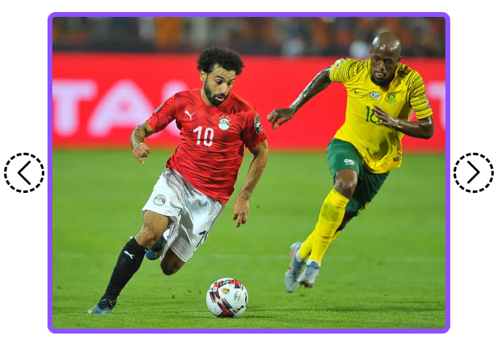
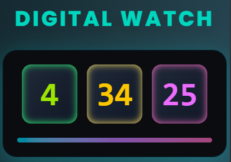
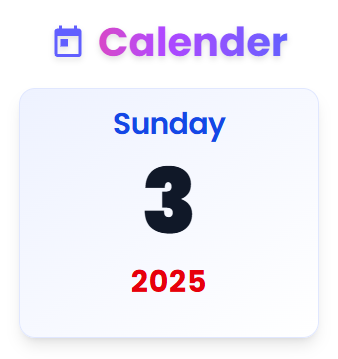

Counter App
Build a sleek counter app with increment, decrement, and reset controls for real-time updates.

Number Guess Game
A fun interactive game where you try to guess the hidden number! Includes hints..

Password strength Checker
Test your password’s strength in real-time. Get instant feedback on whether your password is weak, medium, or strong — and learn how to make it more secure.

Testimonial slider with button
Check out real user feedback and see how these projects helped learners improve their coding skills.

Testimonial slider without buttons
Hands-on JS projects make learning interactive, practical, and fun for beginners and pros alike.

Star rating
Rate items with ease, speed, accuracy, confidence, and precision! This interactive star rating app gives instant feedback on your selections.

Image Slider
Create a smooth, interactive image slider to showcase multiple images with seamless transitions, responsive design, and a stylish modern look for any project gallery.

Percentage Checker
Easily calculate percentages with this interactive Percentage Checker app. Get instant results and visualize your data efficiently for quick decisions.

Color Me
Explore colors dynamically with this interactive Color Me app. Pick, change, and mix colors in real-time for a fun and creative experience.

Mood Selector
Select and track your mood instantly with this interactive Mood Selector app. Visualize your emotions and reflect on your daily feelings.

Body Color Change
Change the background color of your page instantly with a click! This interactive app makes experimenting with colors fun and easy.

Show / hide password
Securely toggle your password visibility with ease and confidence! This interactive app allows users to show or hide passwords instantly for better control.

Currency Converter
Instantly convert currencies with real-time rates! This interactive Currency Converter app helps you calculate accurate conversions quickly and efficiently.

Temperature checker
Check the current temperature instantly! This interactive Temperature Checker app provides real-time weather updates and accurate readings for any location.

Love percentage check
Find out your love compatibility instantly! This fun interactive Love Percentage Checker app calculates a match percentage between two names in real-time.
.png)
Quote Generator (without Api)
Instantly generate random quotes locally without using any API for quick daily inspiration.

Feedback Work Count
JS Project Hub made learning fun and interactive! Real projects and instant feedback helped me improve my skills quickly and gain confidence in coding challenges.

Age calculator
Quickly calculate anyone’s age instantly! This interactive Age Calculator app helps you determine the exact age based on birthdate with ease and accuracy.

BMI calculator
Calculate your Body Mass Index (BMI) instantly! This interactive BMI Calculator app helps you track health and fitness with easy, accurate results.

Tip & Vat Calculator
Easily calculate tips and VAT instantly! This interactive Tip & VAT Calculator app helps you manage bills quickly and accurately for any dining or shopping scenario.

Grade Calculator
Instantly calculate your grades! This interactive Grade Calculator app helps students determine their scores and performance efficiently with ease and accuracy.

Age Frame Calculator
Determine your age range quickly! This interactive Age Frame Calculator app helps you calculate age spans for planning, tracking, and analysis efficiently.

Number Counting Effect
Animate numbers dynamically! This interactive Number Counting Effect app displays counting animations for stats, milestones, or any numeric data in real-time.

Dice Roll
Roll dice virtually with this interactive Dice Roll app! Get random dice results instantly for exciting games, fun, and easy decision-making.

Multiple Tabs Section
Organize and present content efficiently with this Multiple Tabs Section app! Easily switch between tabs to display information smoothly in a clean, interactive, and visually appealing layout for better user experience.

Weight Converter ( Pounds to Kg)
Quickly convert weight from pounds to kilograms! This interactive Weight Converter app provides instant, accurate results for all your measurement needs.

Password Generator
Instantly generate strong, secure, and complex passwords with this interactive Password Generator app! Protect your accounts effectively and safely by creating robust passwords easily in just a few clicks.

Social Media Show / hide
Easily show or hide your social media links instantly, quickly, and effortlessly with this interactive app! Toggle visibility anytime to manage your profile links cleanly and efficiently.

Clock
Display the current time dynamically with this interactive Clock app! Watch real-time updates and keep track of hours, minutes, and seconds accurately.

Calendar
Keep track of dates and events efficiently with this interactive Calendar app! View months, navigate days, and manage schedules effortlessly in real-time.

Anagram Checker
Instantly check if two words are anagrams! This interactive Anagram Checker app helps you verify word arrangements accurately and quickly for fun or learning purposes.

Guess the movie by emojis
Decode movies from emojis in this fun interactive game! Guess the movie titles accurately and challenge your friends while having endless entertainment.

Mini time & Date Together
Display current time and date simultaneously with this interactive Mini Time & Date app! Keep track of real-time updates in a compact, clean, and user-friendly layout.

Weight in other planet
Calculate your weight on different planets instantly! This interactive app helps you explore how gravity affects weight across the solar system in a fun and educational way.

Fake Notification show
Create fake notifications instantly! This interactive app allows you to simulate notifications for fun or testing purposes with realistic, eye-catching designs.

Copy to clipboard
Copy text to clipboard instantly! This interactive app lets you select and copy content quickly, saving time and improving workflow efficiency.